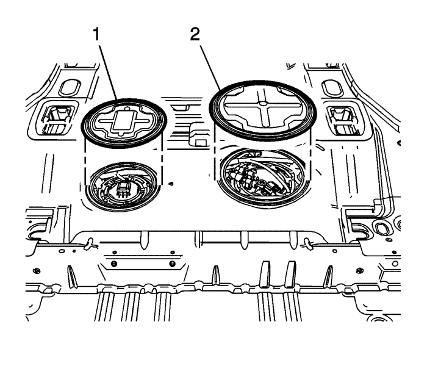
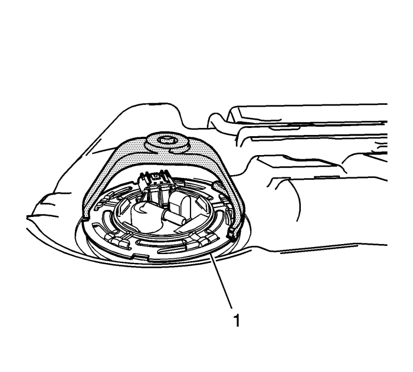
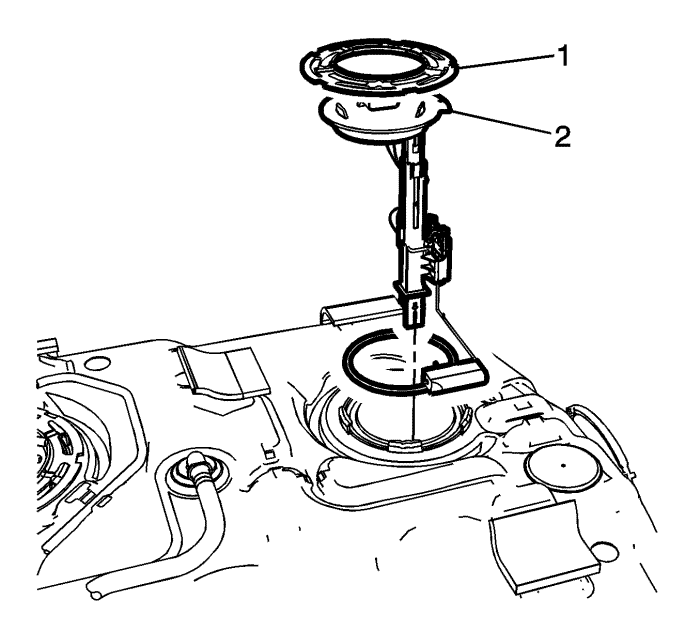

Sustitución del sensor del nivel de combustible principal
Herramientas especiales
CH-48482 Llave del Sensor del Depósito de Combustible
Procedimiento de desmontaje
- Desconecte el cable de batería negativo. Consultar Desconexión y conexión del cable de batería negativo .
- Pliegue el asiento trasero.
- Levante la moqueta y el aislante.

- Desmonte la cubierta de acceso del sensor de nivel de combustible principal (1).

- Desconecte el conector eléctrico del sensor del nivel de combustible principal (5).

- Utilizando una llave del sensor de combustible CH-48482, retire la junta de cierre de la leva (1) girándolo en sentido contrario a las agujas del reloj.

- Desmonte el anillo de bloqueo del sensor de nivel de combustible principal (1).
Nota:
| • | Tenga cuidado al manipular el módulo del depósito de combustible principal/secundario para evitar daños y lecturas incorrectas de los niveles de combustible. |
| • | La junta tórica no debería contaminarse con combustible. |
- Desmonte el conjunto del sensor de nivel de combustible principal (2) y la junta tórica del depósito.
Procedimiento de montaje
- Limpie todas las superficies de contacto del módulo del depósito de combustible y del depósito de combustible.
Nota:
| • | No vuelva a utilizar las juntas tóricas del módulo del depósito de combustible principal o secundario. |
| • | Al desmontar el conjunto de la bomba del depósito de combustible, procure no dañar el transmisor de combustible para el correcto nivelado de combustible. |
- Coloque la nueva junta tórica y el conjunto del sensor de nivel de combustible principal en el depósito de combustible.
- Utilizando una llave del sensor de combustible CH-48482, instale la junta de cierre de la leva (1) girándolo en sentido contrario a las agujas del reloj.
- Enchufe el conector eléctrico del sensor del nivel de combustible (5).
- Monte la cubierta de acceso del sensor de nivel de combustible (1).
- Conecte el cable negativo de la batería.
- Coloque el asiento trasero en su posición original.
| © Copyright Chevrolet Europe. All rights reserved |